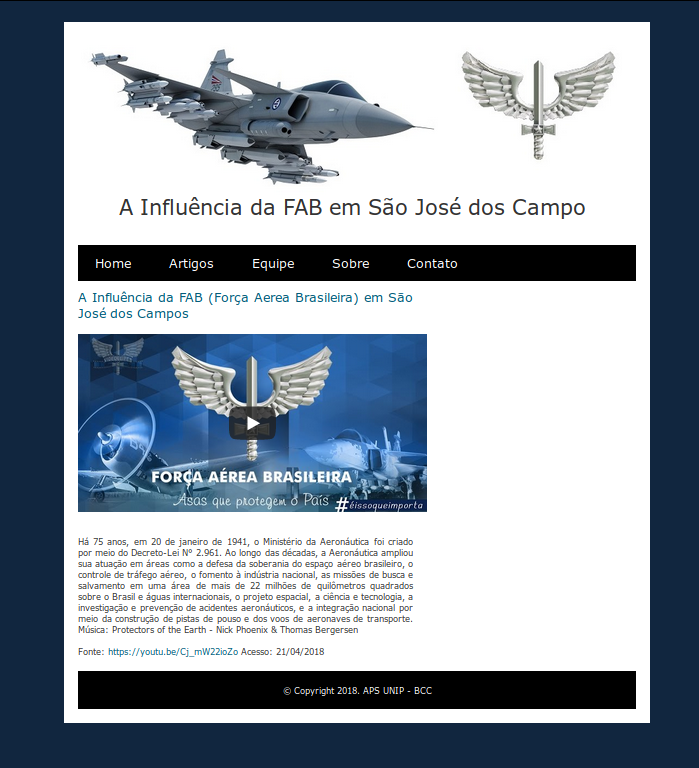
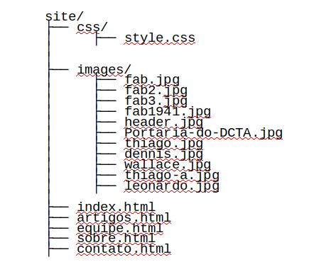
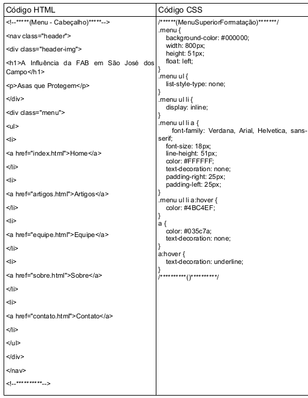
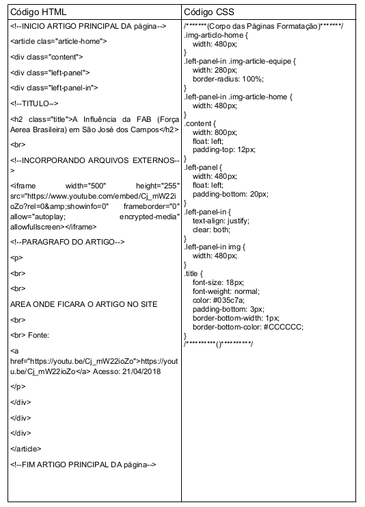
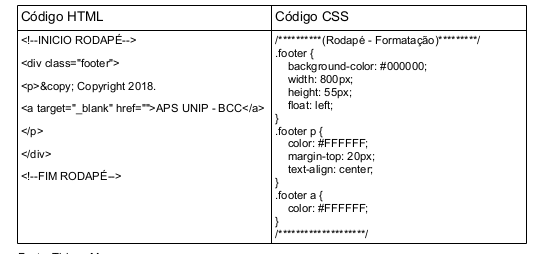
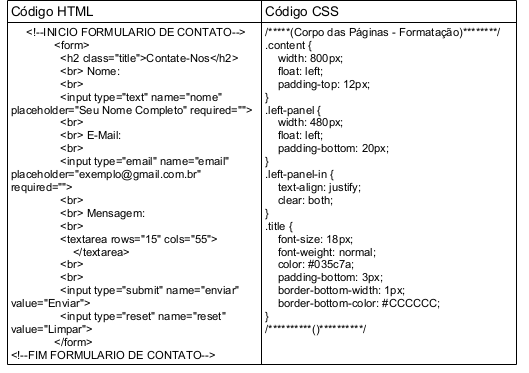

A Linguagem de Marcação HTML
Em função de constar nas orientações da atividades que toda a customização deve ser feita para interface Web e levando em consideração o estudo abordado ate o devido momento, no entendimento dos membros do grupo, a linguagem utilizada mais apropriada para se fazer a implementação deste site da Influencia da Força Aérea Brasileira em São José dos Campos, utilizaremos o HTML na estrutura principal do site
Os motivos para a escolha são os seguintes: (1) maior facilidade de utilização, (2) a linguagem que já nasceu voltada a Internet, (3) ótima integração com todos navegadores da atualidade ate mesmo para os mais antigos.
As Folhas de Estilo CSS
Tendo em vista que CSS foi escolhida para formatação e estilização a ser utilizada na implementação do site, a escolha natural é claro, devido os dois fazerem parte do mesmo conjunto de tecnologia para desenvolvimento de páginas web.
Editor de texto
Com a facilidade da linguagem de marcação e sua estilização, podemos utilizar qualquer editor de texto simples para desenvolvimento de páginas web e um navegador para visualizar o resultado obtido pelo código feito. Porem foi utilizado as seguintes ferramentas, ambas gratuitas, o editor de texto utilizado largamente para desenvolvimento web entre outros, devido a facilidade visual oferecida e organização de seus códigos de forma semântica, SublimeText3 que pode ser encontrado no link: https://www.sublimetext.com/. E nosso próprio navegador web, hoje utilizado em nossos computadores Google Chrome, também gratuito e utilizado no mundo todo pela maioria dos usuários, pode ser encontrado no seguinte link: https://www.google.com.br/chrome/.
Servidor Web
Em função de custos e necessidades para estar hospedando esse página, decidimos utilizar de um dos recursos oferecidos pelo GitHub, GitHub Pages para estarmos hospedando páginas estáticas para apresentação desse trabalho entre outras utilidades que não abordaremos nesse trabalho. Essas características, podem ser encontradas no seguinte link: https://pages.github.com/.
Site hospedado do GitHub Pages
Fonte: GitHub PagesEstrutura Raiz do Site
A estrutura de um projeto, e algo de extrema importância, pensando na legibilidade do código e estrutura de pastas, para que possíveis alterações possam ser feitas de acordo com a necessidade, atualização de conteúdo entre manutenções e estudos. Seguindo algumas boas praticas separamos alguns de nossos arquivos em pastas separadas, ficando com a seguinte estrutura:
Estrutura de pastas e arquivos do projeto
Fonte: Thiago MouraCodificação HTML
Focando em legibilidade e organização, utilizamos uma série de comentários nas partes mais relevante, onde se destaque as funcionalidades que poderão ser modificadas de acordo com as necessidade que possam surgir e para atualizações de conteúdo, fazendo com que qualquer programador possa dar manutenibilidade ao projeto criado.
Abaixo iremos destacar com as tabelas os mais relevantes códigos utilizados, com sua estrutura HTML e sua formatação com CSS.
- Tabela 1: Utilizando uma lista desordenada, lincamos todas as demais páginas construídas no projeto, através de atributos oferecidos pelo HTML.
- Tabela 2: Podemos destacar na área de artigos que basicamente pode ser reutilizada em todo site, já que sua formatação atendeu as necessidades das demais páginas, fazendo com que o site não ficasse com códigos desnecessários.
- Tabela 3: Área destinada ao rodapé, onde se destaca algumas propriedades destinada a data de criação da página desenvolvedor e entidades
- Tabela 4: Área que foi destinada ao formulário, onde podemos destacas, as entradas de dados por meio de campos destinado a sua inserção.
Código HTML e CSS - Menu principal do cabeçalho site
Fonte: Thiago MouraCódigo HTML e CSS - Utilizado nos artigos do site e estrutura principal
Fonte: Thiago MouraCódigo HTML e CSS - Utilizado no rodapé do site
Fonte: Thiago MouraCódigo HTML e CSS - Utilizado no formulário do site
Fonte: Thiago MouraConclusão
As atividades realizadas durante a elaboração desse trabalho foram muito importantes para um maior aprofundamento de diversos assuntos abordados em sala de aula. Além disso, tivemos também a oportunidade de aplicar na prática diversos conceitos relacionados com HTML, CSS e a criação de protótipos.
Com relação às criações dos protótipos das telas do site, pudemos evidenciar na prática o quão produtivo se tornam as atividades de criação e revisão quando se utilizam ferramentas de prototipagem para a documentação do trabalho.
Com relação à especificação de ferramentas de prototipagem usada, a utilização da aplicação Balsamiq se mostrou uma forma simples e eficiente de desenvolver sua ideia em forma de protótipos intuitivos para nos orientar quais seriam os próximos passos para não fugir d ideia de como seria nosso site, além de dar vida a ideia que estava somente em rabiscos.
Já na parte de codificação de nosso site, utilizamos a ferramenta apropriada para editar códigos HTML e CSS, SublimeText3, que foi de grande ajuda em percepção visual dos erros com recursos de identação onde nos deu uma legibilidade facilitando o entendimento do que estava sendo feito, além de nos favorecer com a produtividade do mesmo.
Por fim, para publicar nosso site onde todos pudessem acessar nos, utilizamos um recurso muito interessante e gratuito, GitHub Pages, essa aplicação é um dos recursos oferecidos pela plataforma GitHub, uma plataforma gratuita de hospedagem de códigos, onde se controla cada modificação efetuada por menor que seja.
Nosso projeto encontra se disponível na web, para acessá-lo basta utilizar o seguinte link:https://thiagoluzia.github.io/influencia-da-fab-sjc/.